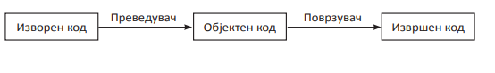

napisi osnovni raboti za programiranje
napisi
Програмирање е процес на пишување наредби за компјутерот, односно создавање компјутерска програма како низа од наредби со користење на некој програмски јазик.
Програмски јазик е формален јазик за презентација (нотација) на сметачки програми.
Програмата која е напишана во некој виш програмски јазик се нарекува изворна програма (source code) и пред извршување треба да се преведе на машински јазик.
Mашинскиот јазик се состои од наредби кои се изразуваат само со нули и единици т.е. само со бинарни цифри). Тоа се симболички програмски јазици. Бидејќи примената на машински јазик им е тешка на луѓето, развиени се виши програмски јазици кои имаат приказ на наредби слични на секојдневниот/природниот јазик. Пример: Fortran, Basic, Pascal, C (C++), Visual Basic, Java.

Фази во процесот на изработка на компјутерска програма:
1. Aнализа на проблемската ситуација и разгледување можни решенија.
2. Aлгоритамско претставување на чекорите за можното решение на проблемската ситуација.
3. Kодирање на алгоритамот
Запишување на алгоритамот како низа од инструкции во избран програмски јазик претставува програмски код кој се вика изворна програма.
4. Преведување на изворната програма во извршна програма
Изворната програма не е разбирлива за компјутерот. Таа мора да се преведе во машински јазик (во кој инструкциите се запишуваат со 1 и 0) за да биде разбрана и извршена од процесорот. Изворната програма преведена на машински јазик се вика извршна програма. За преведување на изворната програма во извршна програма се користат програми преведувачи.
5.Корекција на грешки (синтаксни, логички)
Преведувањето на изворната во извршна програма ретко кога е без грешки. Програмата преведувач го алармира програмерот за направените грешки во изворната програма кои мора да бидат поправени за инструкциите да можат да се преведат во машински јазик.
6. Тестирање на програмата.
Тестирањето на програмата се прави од страна на програмерот или корисниците за кои е наменета програмата. Програмата мора да работи правилно за различни вредности кои ги внесува корисникот или да оневозможи погрешно внесување вредности во програмата преку пораки и сл. до корисникот. Програмата треба да има соодветно решение за сите можни случаи (односно влез) преку испишување соодветна порака.
По успешното поминување на сите фази од процесот може да се каже дека програмата е готова и работи правилно.